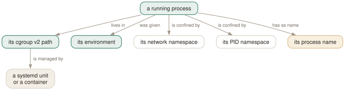

Day 08
Cgroups and namespaces
A name is the weakest identity a process has left.
By the end of today you can
- tell two identical-looking processes apart by where they live rather than what they are called
- select by cgroup, and say why a parent slice matches nothing
- recognise the two ways
--nsand--nslistwill quietly give you the wrong answer
When the name has stopped meaning anything
Everything so far assumes a process can be told apart from its neighbours. On a machine running twenty services under one runtime that assumption fails completely: twenty processes called node, same user, same command line, and no query built from Days 1 to 7 can separate them. What has changed since pgrep was written is that the kernel now records where a process lives, and that is unique by construction.

--cgroup wants the whole path, exactly
Under cgroup v2 every process is in exactly one cgroup, and systemd gives each unit its own. The path is the third colon-separated field of /proc/PID/cgroup:
$ cut -d: -f3 /proc/5489/cgroup
/user.slice/user-1000.slice/user@1000.service/session.slice/pipewire.service
$ pgrep --cgroup /user.slice/user-1000.slice/user@1000.service/session.slice/pipewire.service -a
5489 /usr/bin/pipewire
Namespaces, and why yours are probably lying to you
A namespace is the other half of container isolation: separate views of the network, the mount table, the PID numbering, and so on. --ns takes a PID and matches processes sharing all of that process's namespaces — which is how you say "everything inside the same container as this".
It also has a precondition that the manual page states in one sentence and that deserves rather more. Comparing namespaces means reading the symlinks in /proc/PID/ns/, and an unprivileged process cannot read those for processes it does not own. The result on an ordinary machine with no containers whatsoever:
$ pgrep --ns $$ -c . # 'same namespaces as my shell'
102
$ pgrep --ns $$ -u root -c . # ...of which root-owned:
0
$ pgrep -u root -c . # root processes actually on this machine:
451
Every one of those 451 is in the same namespaces as the shell. All of them were dropped, silently, because pgrep could not read the evidence. Run the comparison the other way and the error reverses — pgrep --ns 1 -c . returns 465, root's processes included.
--nslist drops all but the last name
--nslist is meant to narrow the comparison: "same network namespace, never mind the rest". One name works as documented. A list does not, and the way it fails is easy to reproduce:
$ pgrep --ns $$ --nslist net -c .
104
$ pgrep --ns $$ --nslist uts -c .
143
$ pgrep --ns $$ --nslist net,uts -c .
143
$ pgrep --ns $$ --nslist uts,net -c .
104
The same two namespaces in the other order give a different answer, and each answer equals whichever name came last. The sets agree too, not merely the counts — the only differences are the processes that started or stopped between the two runs. Repeating the flag behaves the same way: --nslist net --nslist uts is --nslist uts.
This is procps-ng 4.0.7 as installed, and it is not mentioned in the manual page, in --help, or in the BUGS section. Treat --nslist as single-valued: use one namespace, and if you genuinely need two, run the query twice and intersect the results with comm -12.
--env: the configuration is the identity
The flag that earns its place most often is the one that is not documented at all. Two processes that are identical in every respect pgrep can see are usually different because of their environment, and --env matches on it directly:
$ pgrep --env DISPLAY -c . # anything with a graphical session
76
$ pgrep --env NODE_ENV=staging -a # the staging one, whatever it is called
4417 node server.js
--env NAME=VALUE- The variable must be set to exactly that value.
--env NAME- The variable must be set to anything at all. A presence test.
The presence form is the more useful of the two: --env DISPLAY is a serviceable definition of "belongs to a graphical session" — 76 of the 611 processes on this machine — --env container catches processes systemd-nspawn has marked, and --env KUBERNETES_SERVICE_HOST catches everything running inside a pod. None of that is expressible any other way.
Today's habit
When a query cannot separate two processes, stop refining the pattern. The pattern has no information left in it. Ask instead which unit started them, or what configuration they were handed — both are recorded, and neither can collide the way a name does.
Tomorrow is the last day: the race you cannot win with any of this, and the several situations in which the right answer is to put pgrep down and use something else.
# Day 8: every process in the same systemd unit as this shell.
pgrep --cgroup "$(cut -d: -f3 /proc/self/cgroup)" -a
# Day 8: separate two identical processes by their configuration.
# Note: this is the environment they were STARTED with, not the current one.
pgrep --env NODE_ENV=staging -a
New vocabulary
Commands
| Command | Does |
|---|---|
cut -d: -f3 /proc/PID/cgroup | The cgroup v2 path --cgroup wants, exactly as it wants it. |
systemctl status PID | Which unit a PID belongs to — the reverse lookup --cgroup does not offer. |
ls -l /proc/PID/ns | The namespace identities a process is confined by. |
Options
| Option | Does |
|---|---|
--cgroup | Match on cgroup v2 path. The whole path, leading slash included. A comma list. |
--ns PID | Match processes sharing all of this PID's namespaces. Needs root to be correct. |
--nslist | Restrict which namespaces --ns compares. Broken for lists of more than one. |
--env NAME=VALUE | Match on an environment variable, or just NAME for its presence. Undocumented. |
Drillsdo these in a real terminal, today
Self-check
Answer out loud first, then unfold.
You want everything under /user.slice/user-1000.slice and write pgrep --cgroup /user.slice/user-1000.slice -a. Nothing comes back, although hundreds of processes are underneath it. Why?
--cgroup compares the whole path for equality. It is not a prefix match and not a hierarchy walk, so a process in /user.slice/user-1000.slice/session-2.scope does not match its own parent slice. Only processes sitting directly in the named cgroup — usually none, for a slice — qualify.
There is no flag for "and everything beneath". Either enumerate the leaves into a comma list, or let systemd do the tree walk: systemctl status user-1000.slice prints the whole subtree, and systemd-cgls draws it.
As an ordinary user on a machine with no containers at all, pgrep --ns $$ -c . returns 102 and every one of them is yours — no root processes, although root's processes are obviously in the same namespaces. What is happening?
pgrep compares namespaces by reading the symlinks in /proc/PID/ns/, and an unprivileged process cannot read those for a process it does not own. Every root-owned process therefore fails the comparison rather than passing it, and drops out silently.
The manual page's "Required to run as root to match processes from other users" is understating it: the failure is not that you get a partial answer, it is that you get a confident partial answer with no warning. Worse, the error runs the other way too — on the same machine pgrep --ns 1 -c . returns 465, including 451 root-owned processes. Use --ns as root or do not use it.
pgrep --ns $$ --nslist net,uts and pgrep --ns $$ --nslist uts,net return different numbers of processes. What does that tell you?
That the list is not being combined at all — only the last entry takes effect. On one machine --nslist net returned 104 processes and --nslist uts returned 143; --nslist net,uts returned 143 and --nslist uts,net returned 104, each matching its final element and differing from it only by the handful of processes that started and stopped between the two runs.
So in procps-ng 4.0.7 a multi-name --nslist silently discards everything but the last name. Use one namespace at a time, and if you need two, run the query twice and intersect the results yourself.
Two node processes, same user, same command line, both started by systemd. How do you tell which is the staging one?
By where it lives or what it was given, since what it is called has run out of information. --cgroup separates them if they are different units, which under systemd they will be. --env separates them if the difference is configuration, which it usually is: pgrep --env NODE_ENV=staging -a.
--env also takes a bare name, matching any process that has the variable set at all — pgrep --env DISPLAY is a decent definition of "has a graphical session". Like -Q and -p, it appears only in --help.
Cheat sheet
pgrep --cgroup /full/path/to.service # EXACT path, leading slash, no descent
# cut -d: -f3 /proc/PID/cgroup <- get the path in the form it wants
# systemctl status PID <- the reverse lookup pgrep lacks
pgrep --env NAME=VALUE # exact match on the STARTING environment
pgrep --env NAME # presence test - 'has a DISPLAY', 'is in a pod'
pgrep --ns PID # same namespaces. ROOT ONLY, or it is silently wrong:
# as a user, 'pgrep --ns $$ -u root' returns 0 of 451 real matches.
pgrep --ns PID --nslist net # ONE namespace only - a list keeps just the LAST
Everything through Day 08
Commands
| Command | Does |
|---|---|
pgrep sshd | List the PID of every process whose name matches the ERE sshd. |
pgrep -u root sshd | Two criteria, AND-ed: owned by root and named sshd. |
pgrep -u root,daemon | One criterion, OR-ed: owned by root or by daemon. No pattern at all. |
pgrep 'systemd|cron' | One ERE, two alternatives. Two bare patterns would be an error. |
pgrep --version | Print the procps-ng version this course is checked against. |
pgrep -f 'python3 .*worker' | Match the full command line, so the interpreter's arguments count. |
pgrep -x systemd | Only processes named exactly systemd — not systemd-logind. |
pgrep -A -f myscript.sh | Match command lines, but ignore every ancestor of this pgrep. |
cat /proc/PID/comm | The 15-character name pgrep matches by default. |
tr '\0' ' ' < /proc/PID/cmdline | The full command line pgrep matches under -f. |
ps -fp $(pgrep -d, -x sshd) | The man page's own idiom: hand a comma list to ps. |
renice +4 $(pgrep chrome) | Word-splitting turns newline-separated PIDs into separate arguments. |
pgrep -a -Q -f worker | List command lines with argument boundaries preserved. |
pgrep -P $$ | Everything your current shell forked directly. |
pgrep -t pts/3 -a | Everything running on one terminal — the other window. |
pgrep -g 0 | Processes in pgrep's own process group; -s 0 does the same for the session. |
pgrep -n -a firefox | The most recently started match, with its command line. |
pgrep -O 3600 -u $USER -a | Everything of yours that has been running for over an hour. |
pgrep -r D -a | Processes in uninterruptible sleep — the ones a dying disk produces. |
ls /proc/PID/task | Every thread of a process, by TID. |
cat /proc/PID/task/TID/comm | One thread's own name — often nothing like the process's. |
pgrep -w -f nginx | All threads of every matching process, since threads share the command line. |
pkill -e -f 'python3 worker' | Signal every match and say which ones. SIGTERM by default. |
pkill -HUP syslogd | The man page's own example: make a daemon reread its configuration. |
pkill --signal 0 -e -x myapp | Send nothing. A pure permission probe — but -e still says "killed". |
pidwait -e -x myapp | Block until every match has exited, including processes you did not start. |
cut -d: -f3 /proc/PID/cgroup | The cgroup v2 path --cgroup wants, exactly as it wants it. |
systemctl status PID | Which unit a PID belongs to — the reverse lookup --cgroup does not offer. |
ls -l /proc/PID/ns | The namespace identities a process is confined by. |
Options
| Option | Does |
|---|---|
-c, --count | Print how many processes matched instead of their PIDs. |
--quiet | Print nothing; the exit status is the whole answer. Long form only. |
-f, --full | Match against the whole command line instead of the process name. |
-x, --exact | Require the pattern to match the whole string, not a part of it. |
-i, --ignore-case | Match case-insensitively. |
-A, --ignore-ancestors | Drop every ancestor of this pgrep from the result. The fix for -f in scripts. |
-l, --list-name | Print the process name after the PID. Still the 15-character name, even under -f. |
-a, --list-full | Print the full command line after the PID. |
-Q, --shell-quote | Shell-quote each argument in -a output, so boundaries survive. Undocumented. |
-d, --delimiter | Join the PIDs with this string instead of a newline. A trailing newline is still added. |
-u, --euid | Match on the effective user — the authority the process is acting with. |
-U, --uid | Match on the real user — who started it. |
-G, --group | Match on the real group. Name or number. |
-P, --parent | Match processes whose parent is one of these PIDs. |
-g, --pgroup | Match on process group. 0 means pgrep's own. |
-s, --session | Match on session ID. 0 means pgrep's own. |
-t, --terminal | Match on controlling terminal, named without /dev/. |
-p, --pid | Match only these PIDs — a filter, not a lookup. Undocumented. |
-n, --newest | Keep only the most recently started match. |
-o, --oldest | Keep only the least recently started match. |
-O, --older | Keep matches started more than this many seconds ago. |
-r, --runstates | Keep matches in one of these kernel run states. A comma list. |
-v, --inverse | Return everything the query did not select — the whole query, not just the pattern. |
-w, --lightweight | Walk threads rather than processes: match every thread's own name, and print TIDs. |
-F, --pidfile | Read PIDs from a file and use them as a criterion. |
-L, --logpidfile | With -F, fail unless the pidfile is locked. |
--signal SIG, -SIG | Which signal to send. Name or number. Default SIGTERM. |
-e, --echo | Print a line per process signalled. Says "killed" whatever the signal was. |
-q, --queue N | Use sigqueue(3) and attach this integer to the signal. |
-H, --require-handler | Only signal processes that have a userspace handler for that signal. |
-m, --mrelease | Release the target's memory immediately after signalling. Undocumented. |
--cgroup | Match on cgroup v2 path. The whole path, leading slash included. A comma list. |
--ns PID | Match processes sharing all of this PID's namespaces. Needs root to be correct. |
--nslist | Restrict which namespaces --ns compares. Broken for lists of more than one. |
--env NAME=VALUE | Match on an environment variable, or just NAME for its presence. Undocumented. |